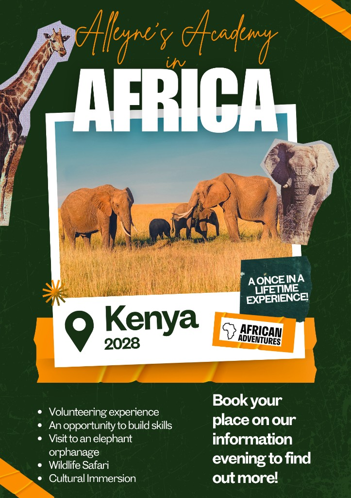

In the partner school
Helping teach lessons, coaching sports or building new classrooms, depending on the role each student chooses.
Alleyne’s Academy in Africa
In January 2028 a group of Alleyne’s students will fly to Nakuru to volunteer in local schools and meet the community there. Every donation, big or small, helps get them on the plane.
Nakuru, Kenya · January 2028

Alleyne’s Academy is a 13–18 academy in Stone, Staffordshire, with a sixth form and plenty going on beyond lessons. In January 2028 a group of our students will take that a very long way from home.
Working with African Adventures, they will spend nine nights in Nakuru, Kenya’s fourth-largest town, volunteering at one of its partner schools: helping teach lessons, coaching sports or building classrooms.
It is a chance to build skills, make friends and properly see a different part of the world. It is also a big cost for families, so the students are fundraising to get there, and that is where you come in.
Helping teach lessons, coaching sports or building new classrooms, depending on the role each student chooses.
A visit to the David Sheldrick elephant orphanage, then a safari in the world’s only city national park.
A Kenyan cookery lesson, a first Swahili lesson and an afternoon at the Menengai Crater in the Great Rift Valley.
Donations here go towards shared costs: flights, accommodation, in-country transport and the community projects the group will be working on.
£0
Raised
£0
Target
0
Supporters